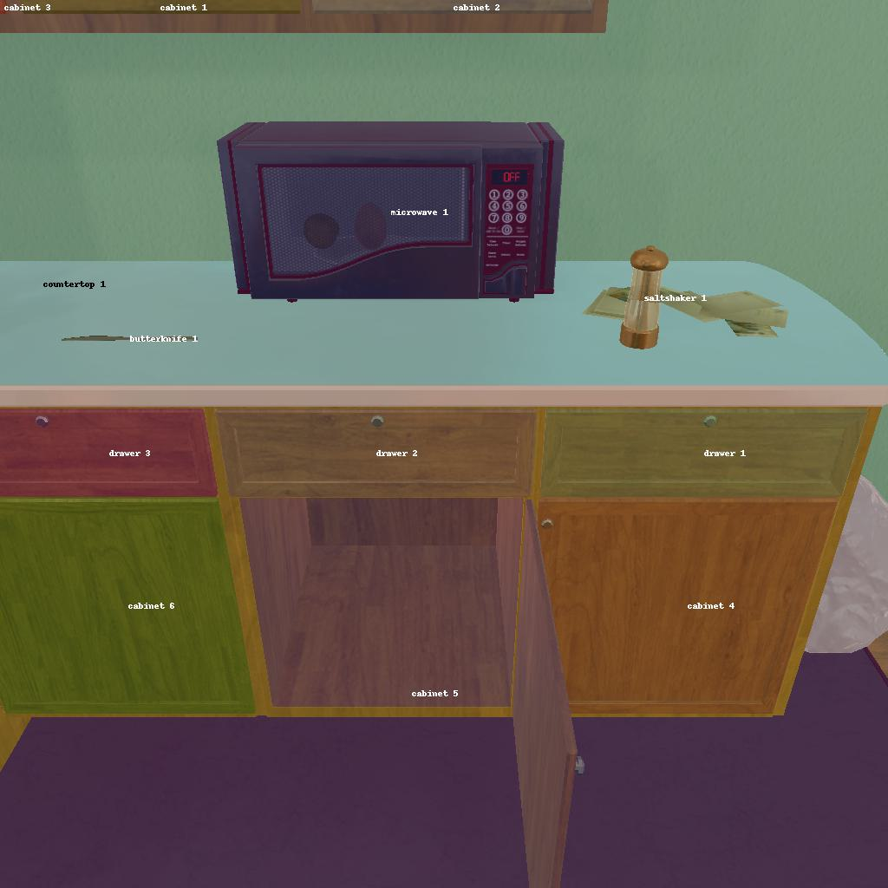

---------------------------------------------------------task: 17---------------------------------------------------------
--------------------------------------------------------------------------------------------------------------------------------------------------------------------
--------------------------------------------------------------------------------------------------------------------------------------------------------------------
Step:--------------------------------------------------------------------------13-------------------------------------------------------------------------------
----------------------------------------
VLM Prompt:
Image1:
Image2:
Image3:
**Instruction**
1. Analyze the provided image to identify all visible household objects, focusing on those relevant to the task description "cool some pan and put it in stoveburner."
2. Use the analysis of the image and the task hint "The agent must find an object of the desired type, pick it up, go to a fridge, cool the object with the fridge, then find the correct location to place it, and put it down there. The agent does not need to use the fridge button or open the fridge to cool the object, and the agent just needs to do action that is "cool the object with the fridge"." to answer the question: what is the most reasonable action in the choices for the task description "cool some pan and put it in stoveburner"?
4. Decide and write the answer using the template: The answer is: (i): , where i is the real number. If there is no desired object in the image, search every place based on **Initial Observation** to find the object. And if no one is exactly correct, choose a similar answer.
**Initial Observation**
You are in the middle of a room. Looking quickly around you, you can see cabinet (1-14), countertop (1-2), microwave (1), drawer (1-5), sink (1), sinkbasin (1), coffeemachine (1), stoveburner (1-4), toaster (1), fridge (1), diningtable (1), garbagecan (1), safe (1)
**Answer Choices**
(1): go to cabinet 1
(2): go to cabinet 3
(3): go to countertop 1
(4): go to cabinet 5
(5): go to microwave 1
(6): go to cabinet 6
(7): go to drawer 1
(8): go to drawer 2
(9): go to drawer 3
(10): go to cabinet 7
(11): go to cabinet 8
(12): go to sink 1
(13): go to sinkbasin 1
(14): go to coffeemachine 1
(15): go to cabinet 9
(16): go to cabinet 10
(17): go to drawer 4
(18): go to cabinet 11
(19): go to stoveburner 1
(20): go to stoveburner 2
(21): go to stoveburner 3
(22): go to stoveburner 4
(23): go to cabinet 12
(24): go to toaster 1
(25): go to drawer 5
(26): go to countertop 2
(27): go to fridge 1
(28): go to cabinet 13
(29): go to cabinet 14
(30): go to diningtable 1
(31): go to garbagecan 1
(32): go to safe 1
(33): open cabinet 2
(34): close cabinet 2
(35): examine cabinet 2
**Answer**
Let's think step by step by following the instructions.
----------------------------------------
----------------------------------------
Original Response:
The task is to "cool some pan and put it in stoveburner." Firstly, we need to find a pan. There is no pan visible in the provided images, so we must search the cabinets, drawers, and the countertop based on the initial observation to find one.
Checking the answer choices, we need to select actions that could lead us to find a pan:
(1): go to cabinet 1 - Possible location for a pan
(2): go to cabinet 3 - Possible location for a pan
(4): go to cabinet 5 - Possible location for a pan
(6): go to cabinet 6 - Possible location for a pan
(7): go to drawer 1 - Possible location for a pan
(8): go to drawer 2 - Possible location for a pan
(9): go to drawer 3 - Possible location for a pan
(10): go to cabinet 7 - Possible location for a pan
(11): go to cabinet 8 - Possible location for a pan
(15): go to cabinet 9 - Possible location for a pan
(16): go to cabinet 10 - Possible location for a pan
(17): go to drawer 4 - Possible location for a pan
(18): go to cabinet 11 - Possible location for a pan
(23): go to cabinet 12 - Possible location for a pan
(25): go to drawer 5 - Possible location for a pan
(28): go to cabinet 13 - Possible location for a pan
(29): go to cabinet 14 - Possible location for a pan
After finding the pan, the next step would be to cool it with the fridge, so we need to go to the fridge:
(27): go to fridge 1 - Action to cool the pan
Finally, we need to place the cooled pan on the stoveburner:
(19): go to stoveburner 1 - Possible location to place the pan
(20): go to stoveburner 2 - Possible location to place the pan
(21): go to stoveburner 3 - Possible location to place the pan
(22): go to stoveburner 4 - Possible location to place the pan
The most reasonable action sequence would be to find a pan in one of the possible locations, then go to the fridge to cool it, and finally place it on a stoveburner. Since the exact location of the pan is not known, we need to choose a starting action that could lead to finding a pan. The first location to check could be any of the cabinets or drawers mentioned.
The answer is: (1): go to cabinet 1
----------------------------------------
----------------------------------------
>>> Refine Original VLM Response and Get Pure Action: go to cabinet 1
----------------------------------------
-----------------------------------------------------------------
Running time: 40.59900879859924 seconds
Total Money: 10.89713
-----------------------------------------------------------------
-----------------------------------------------------------------
Text Observation:You arrive at loc 0. The cabinet 1 is closed.
-----------------------------------------------------------------
UNSUCCEED